선택보다 먼저, 마음을 살피는 연습
투자 정보는 넘치지만,
무너지는 감정은 방치되어 있습니다.
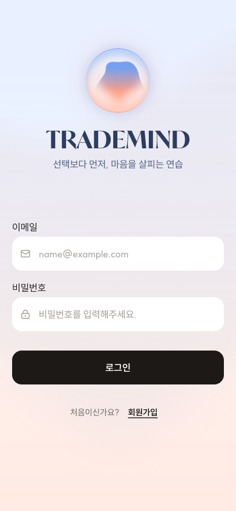
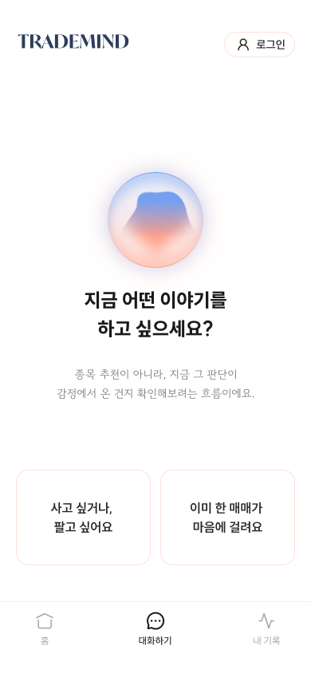
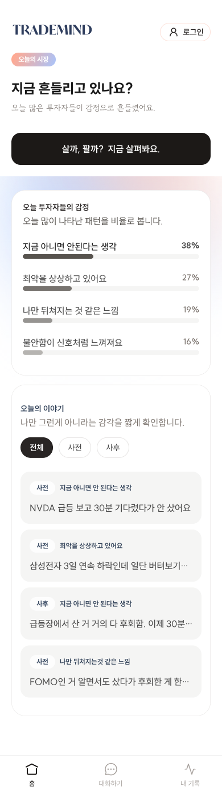
긴 화면은 휴대폰 안에서 위아래로 넘겨 볼 수 있어요
투자 맥락을 아는 서비스와 감정을 돌보는 서비스는 따로 있습니다.
CBT(인지행동치료) 프레임으로 감정과 판단을 분리해 보게 하고,
기록으로 습관을 만듭니다.
불안이 올라올 때,
선택지로 상황을 말해요
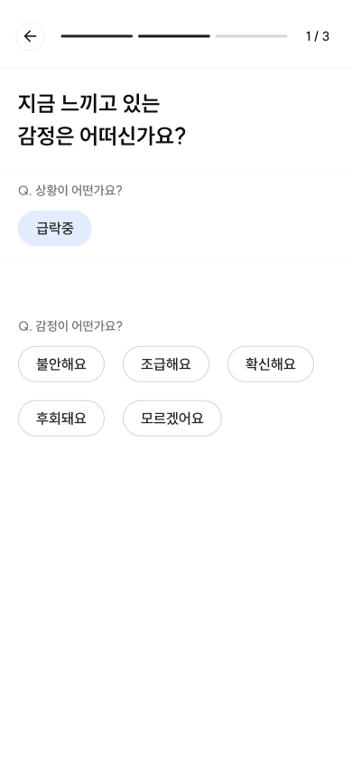
AI가 왜곡을 짚고, 질문 하나를 겨냥해요
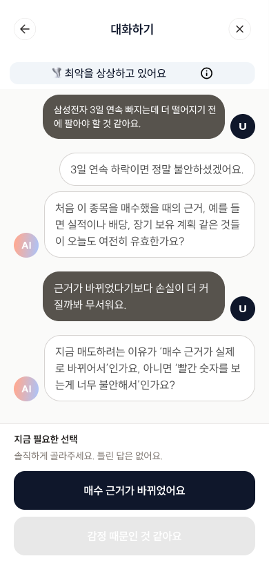
관망할지 진행할지, 스스로 언어화해요
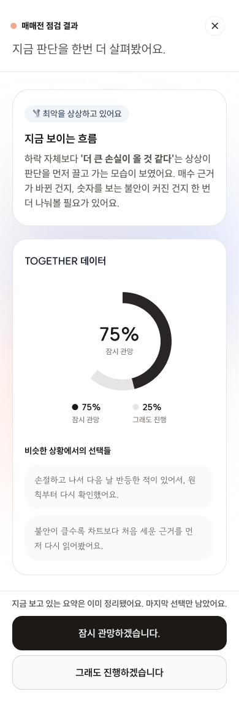
반복되는 내 패턴을 직접 확인해요
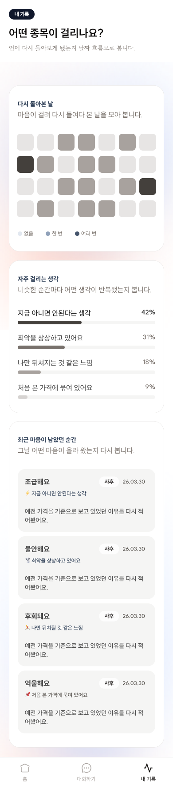
"삼성전자가 3일 연속 하락 중" 인 순간을 예로 들었어요 · 옆으로 넘겨 보세요
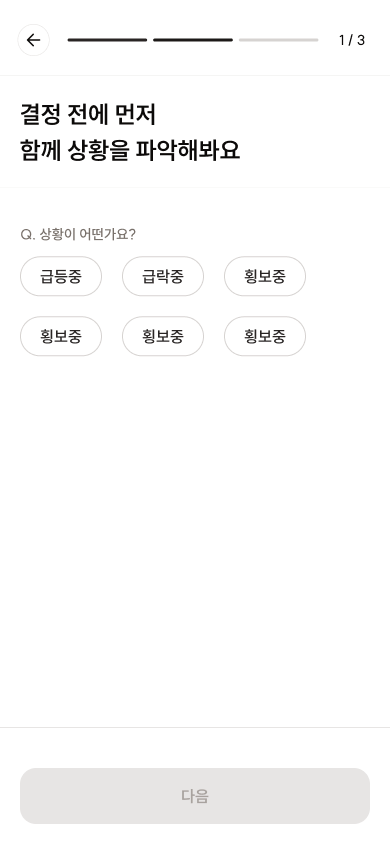
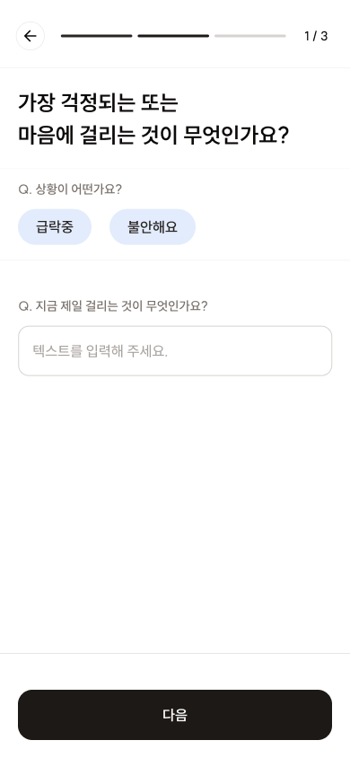
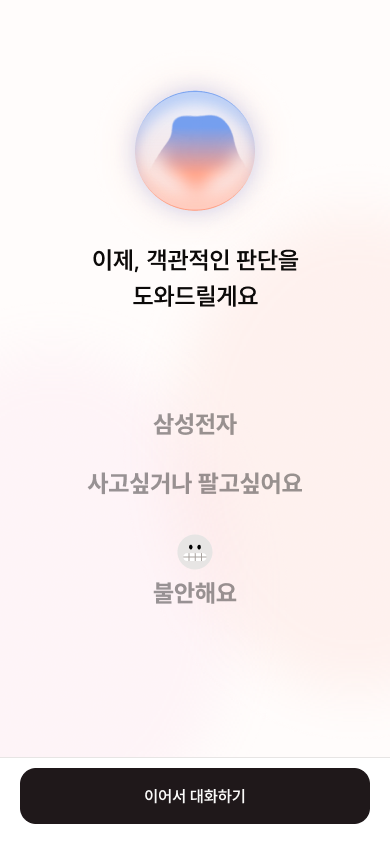
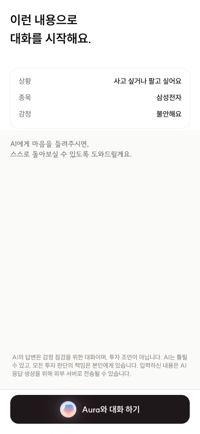
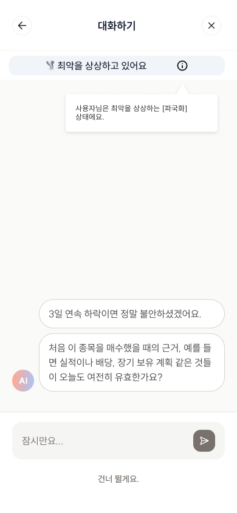
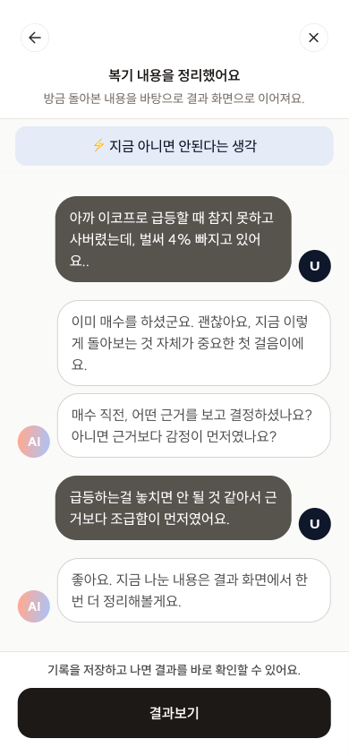
앱이 사용자의 말로 바꿔 부르는 인지 왜곡
비슷한 상황의 투자자들이 어떤 선택을 했는지 익명으로 보여줘, 고립된 판단을 집단의 경험으로 보완합니다.
* 프로토타입 화면의 예시 수치입니다.
상황 · 감정 · 생각을 나눠 받으면, 구조를 건드리지 않고도 AI가 받는 입력이 좋아집니다.
해커톤에서는 완전함보다 끝까지 구현하고 안정적으로 시연하는 것이 먼저였습니다.
해커톤에서는 프로토타입까지 만들었습니다. 효과는 아직 입증 전이며,
아래 계획으로 확인합니다.
상태: 프로토타입 구현 완료 · 사용자 데이터 미확보
멘탈 캘린더 기록 · 인지 왜곡 분류
반복 패턴 분석 · 시장 이벤트 감지 알림
증권사 포트폴리오 연동 · 집단 맥락 고도화
CBT 프레임을 서비스 흐름으로 옮기는 기획이 개발의 출발점이었습니다.
'감정적 판단' 가설을 수치로 뒷받침한 것이 팀 설득의 핵심이었습니다.
제약 안에서 무엇을 버릴지 정하는 것이 PM의 일이었습니다.